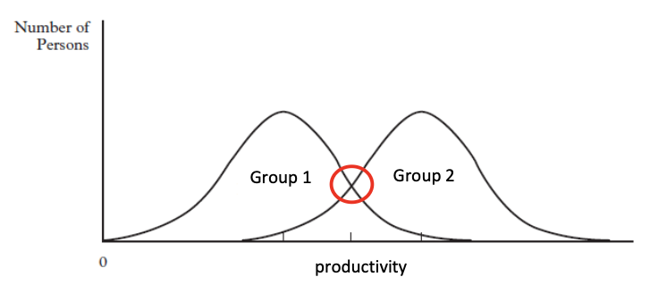
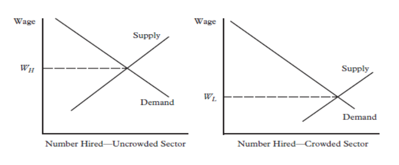

8. Discrimination Theories and Gender
⚖️ I. Definition of Discrimination in Labour Markets
Discrimination leads to severe market inefficiencies and profound social inequalities. In economics, the strict definition is:
The Economic Definition
Discrimination exists when workers with the exact same productive capacities are treated differently strictly on the basis of the demographic group to which they belong (gender, race, age, nationality, religion, sexual preference, disability).
When the labour market fails to reward identical human capital equally, we observe two main outcomes:
- Wage discrimination: Two individuals with identical productivity receive different wages.
- Employment segregation: Certain groups are systematically excluded from or concentrated in specific occupations or sectors.
Timeline of Discrimination
Inequalities are built over a lifetime. It is essential to distinguish when the inequality occurs:
- Pre-market discrimination: Occurs before entering the labour market. This includes unequal access to human capital (e.g., girls being discouraged from STEM education) or societal pressures steering specific groups toward less lucrative occupations.
- Post-market (in-market) discrimination: Occurs when employers, customers, or co-workers negatively evaluate a minority group member who is already active in the labour market.
🚨 Discrimination vs. Under-representation
It is crucial to distinguish between true discrimination and statistical under-representation. Women have, on average, lower wages than men. However, if a country strictly applies the principle of "equal pay for equal work", the lower average female wage might simply reflect their higher concentration in lower-paid professions (like care work or early education).
This is occupational segregation, not wage discrimination per se.
📊 II. Empirical Reality: Self-Reported Discrimination & Perceptions
To understand theory, we must first look at the data. Let's analyze data from the EU (2021) and the Czech Republic (ISSP 2015).
1. Heterogeneity of Discrimination (EU Data)
Origin-Based (Non-EU)
Non-EU workers report the highest overall levels of discrimination (8–9%). Employers use national origin as a proxy, penalizing immigrants heavily.
Men's Experience
Among men, discrimination is overwhelmingly linked to foreign origin. Gender discrimination against men is practically non-existent.
Women's Experience
Women experience a compound effect. They face a powerful mix of both origin-based AND gender-based discrimination simultaneously.
2. The Glass Ceiling (ISSP 2015 Data - Czechia)
Surveys ask who has easier access to leadership roles and who earns more. The consensus is massive:
- Leadership: 84% of women and 72% of men admit that men have an advantage for top jobs.
- Wages: 89% of women and 79% of men agree that men earn more.
The Sociological Impact
This massive cross-gender consensus reflects the Glass Ceiling phenomenon — invisible, structural barriers preventing women and minorities from accessing upper-management positions, despite identical qualifications.
Why this matters: While these surveys capture "opinions," these deep-seated societal beliefs alter the behaviour of rational agents. If women know the deck is stacked against them, it influences their educational investments and salary negotiations.
📚 III. Economic Theories of Discrimination
Economists possess three major frameworks to explain why profit-maximizing firms engage in discriminatory practices.
1. Personal-Prejudice / Distaste Models (Becker, 1971)
Gary Becker posited that discrimination is not a rational evaluation of skills, but a psychological "distaste" or prejudice. Actors are willing to pay a financial cost to avoid a specific minority group.
d = The Discrimination Coefficient
For a prejudiced employer to be indifferent, the female wage ($W_F$) must be penalized by the exact value of the employer's distaste ($d$) compared to the male wage ($W_M$).
Becker separated this prejudice into three sources:
- A. By Employers: If a firm refuses to hire highly productive women simply because they are women, the employer is actively sacrificing financial profits to maximize their personal utility. In a perfect, competitive market, non-discriminatory firms should hire all the underpaid women and drive the prejudiced firms out of business.
- B. By Employees: If male workers have a "distaste" for female managers, they will demand a compensating wage premium to work with them. To avoid paying this premium, a rational firm won't lower wages; instead, the firm will totally segregate the workforce (e.g., hiring only men or only women).
- C. By Customers: Customers may prefer to be served by a specific demographic (e.g., male mechanics, female nurses) and demand lower prices if served by someone else. This hurts firm profit, leading the firm to lower the wages of the discriminated group. Crucial condition: the worker must be visible to the customer.
2. Statistical Discrimination
Unlike Becker’s model, statistical discrimination is not driven by hatred or distaste, but by imperfect information and the desire to minimize risk and hiring screening costs.

📈 Graph Explanation: Statistical Discrimination
What the graph shows:
- Horizontal Axis: Individual Productivity level.
- Vertical Axis: Number of individuals (frequency).
- The Curves: We see two overlapping normal distributions representing two separate groups. Group 2 (e.g., native men) has a higher average expected productivity than Group 1 (e.g., minority workers or young women).
- The Intersection Point: Look closely at the exact point where the two curves cross. An individual selected from exactly this point possesses the exact same actual productivity regardless of their group.
Economic Intuition & Mechanism:
- Because employers cannot perfectly observe individual productivity (it's hidden or too expensive to test), they rely on the average group performance as a cheap proxy.
- Even if the candidate from Group 1 is just as skilled as the candidate from Group 2 (at the intersection), the employer assumes the Group 2 worker is safer based purely on statistical averages.
- Conclusion: Equally productive individuals are treated completely differently based solely on group affiliation, purely due to imperfect information.
⚠️ The Vicious Cycle
If a group knows employers will statistically discriminate against them, they have no incentive to invest in their own education. Over time, their actual group productivity decreases, which perfectly validates the employer's initial bias! It becomes a self-fulfilling prophecy.
3. Crowding Hypothesis and Dual Labour Markets
This theory argues that discrimination manifests as barriers to mobility, completely splitting the economy into a Dual Labour Market:
- Primary Sector: High wages, stable employment, safe conditions, and internal promotion opportunities.
- Secondary Sector: Low-wage, unstable contracts, precarious jobs with no advancement.

📉 Graph Explanation: The Crowding Effect
What the graph shows:
- We have two separate supply-and-demand graphs. On the left is the Uncrowded (Primary) Sector. On the right is the Crowded (Secondary) Sector.
- Axes: The vertical axis is Wages, the horizontal axis is Number of Workers (Employment).
- Both feature standard downward-sloping demand and upward-sloping supply curves.
Economic Intuition & Mechanism:
- The Barrier: Due to the Glass Ceiling or societal segregation, certain groups (women, minorities) are banned or heavily discouraged from entering the Primary Sector.
- The Shock: Because they must work, these millions of people are forced to crowd into the Secondary Sector.
- Market Result: This massive influx drastically throws the Labour Supply curve in the Secondary Sector far to the right, generating an enormous excess supply of workers.
- Final Impact: This mechanically crashes the equilibrium wage to a rock-bottom level ($W_L$) in the secondary sector, while keeping wages artificially high ($W_H$) in the primary sector. The wage gap is created by MARKET STRUCTURE, not by individual incompetence!
💶 IV. The Gender Wage Gap (GWG) & Selection Bias
The Gender Wage Gap (GWG), also called the Gender Pay Gap (GPG), is the standard metric used to quantify these inequalities.
The Danger of the "Unadjusted" GPG
The unadjusted GPG in Czechia is very high (around 18.5%). In the EU, it averages 11%. However, countries like Italy, Greece, and Romania boast an impressively low GPG (near 4 to 5%). Are they perfectly equal?
No. Taking a low, unadjusted GPG as a sign of equality is a catastrophic analytical error due to Selection Bias.
The Heckman Selection Bias Mechanism
Why do Italy and Greece have a low wage gap? Because they have a massive Gender Employment Gap (GEG). In these countries, millions of women are entirely excluded from the workforce due to poor childcare access or culture.
The Mathematical Illusion: The few women who do overcome these brutal barriers to work are overwhelmingly hyper-educated elite professionals. Because low-skilled women are safely hidden at home (their wage isn't counted as zero, it's just deleted from the dataset), the mathematical average wage of the remaining working women is artificially inflated!
Key Insight: There is a negative correlation (-0.29 in the EU) between the Wage Gap and the Employment Gap. A low wage gap often masks severe social exclusion. (This phenomenon earned James Heckman the Nobel Prize in 2000).
📉 Exam Example: Jennifer Hunt (2002) & East Germany
After reunification (1990-1994), East Germany's Gender Pay Gap crashed by 10 percentage points. A feminist victory? No! Hunt demonstrated that half of this "improvement" was driven by the fact that low-skilled women were fired en masse during the transition, vanishing from the data pool entirely.
🎓 V. Human Capital & The Oaxaca-Blinder Decomposition
If we control for these statistical illusions, what genuinely causes the gap in countries like Czechia?
1. Education and the Field of Study Paradox
Following the 2000 Bologna Process, tertiary education exploded. In Czechia (2024), women are now significantly more educated than men (31.1% vs 24.0% holding tertiary degrees). The education gap has reversed!
Yet, the massive wage gap remains. Why? Because of Educational Segregation. Human capital is not homogeneous. Women heavily dominate low-yielding sectors (Education 82%, Health 78%), while men dominate high-yielding sectors (ICT 83%, Engineering 68%). Furthermore, women's age-earnings profiles are much flatter due to career interruptions.
2. The Ultimate Tool: Oaxaca-Blinder (1973)
To mathematically untangle what portion of the wage gap is justified by objective market logic, economists Ronald Oaxaca and Alan Blinder standardized a powerful econometric technique using Mincer wage regressions.
Oaxaca-Blinder Formula
\[ \ln \bar{W}^M - \ln \bar{W}^F = \underbrace{\left( \bar{X}^M - \bar{X}^F \right)\hat{\beta}^M}_{\text{Endowment effect (explained part)}} + \underbrace{\bar{X}^F \left( \hat{\beta}^M - \hat{\beta}^F \right)}_{\text{Remuneration effect (unexplained part)}} \]Breaking Down the Two Pillars
1. The Endowment Effect (Explained Part):
This is the wage gap driven purely by the fact that men and women have different vectors of characteristics ($X$) — e.g., men having more uninterrupted experience or choosing engineering over teaching.
2. The Remuneration Effect (Unexplained Part):
This is the core inequality! It is the gap generated when the market pays differently ($\beta$) for the exact same characteristics. A woman with a master's degree receives a lower return on her degree ($\hat{\beta}^F$) than a man with the identical degree ($\hat{\beta}^M$).
Eurostat Terminology & Final Conclusion
Eurostat classifies the gap in two ways:
- Unadjusted form: The total raw GPG.
- Adjusted form: The total GPG minus the explained part.
The Empirical Reality: In Czechia, controlling for everything (education, age, contract type, children) only explained about 31% of the gap in 2016. The majority of the wage gap resides in the Unexplained Part. While this unadjusted remnant captures some unobservable motivations, it stands as the undeniable quantitative footprint of systemic market discrimination and occupational crowding.